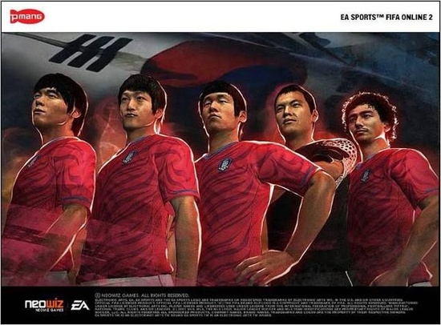
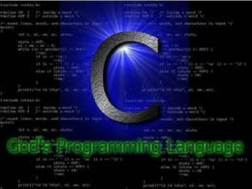
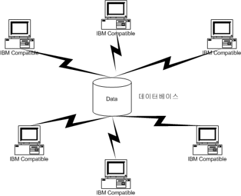

Programmer
컴퓨터프로그래머는 컴퓨터가 인식할 수 있는 언어를 사용하여 필요한 명령체계 혹은 시스템을 만든다.컴퓨터의 프로그램 언어를 사용해서 프로그램을 코딩하고, 코딩된 프로그램에 대해서 논리적인 에러를 추적 발견하고 이를 수정한다. 프로그램 테스팅은 단위별, 모듈별 및 통합 테스팅의 단계별로 실시하여 프로그램의 완벽을 기한다. 통합된 프로그램이 그 요구사항들을 충족하는가를 판단하기 위해 기능테스트, 통합된 프로그램이 어떤 성능 기준을 달성하는가를 판단하기 위해 성능 테스트, 해당 프로그램이 요구명세와 모든 일반적인 성능 요구조건을 충족하는가를 판단하기 위해 수용 테스트, 실제 운영 목적을 위해 사용될 컴퓨터 상에서 설치테스트를 실행한다. 테스트의 실제적인 결과는 예측된 결과와 비교 분석하여 에러를 수정한다.
The Necessary of major that we have to study
| Number | Picture | Job | Explain ( definition, business ) |
|---|---|---|---|
| 1 | 웹프로그래머 | 웹프로그래머는 이용자의 요구와 사용목적 등을 고려하여 새로운 인터넷 사이트를 개설하고 인터넷 사이트상에서 요구되거나 서비스되는 각종 프로그램을 개발한다. 논리 흐름도와 다이어그램을 사용하여 프로그램을 분석,검토하고, 세부 논리 흐름도를 프로그래밍 언어로 전환시킨다. 웹과 데이터베이스를 연동시키기 위한 프로그램을 작성하며, 사용자의 요구에 맞춰 프로그램을 개발 및 개정한다. 웹사이트 상의 문제점을 확인하고, 프로그램상의 오류를 수정한다. 기존 프로그램을 웹 상에서 데이터베이스와 연동시키고, 웹 사이트에서 운영될 각종 응용 프로그램을 개발하며, 사용자가 요구하는 기능을 제공하기 위한 프로그램을 작성한다 | |
| 2 |  | 온라인게임 프로그래머 | 게임의 구성 요소인 그래픽, 동영상, 음악 등의 객체들이 하나의 유기체를 이루어 실행될 수 있도록 게임에 생명력을 불어넣는 작업을 하는 사람이다. 게임을 구성하는데는 크게 게임 기획, 게임 그래픽, 게임 프로그래밍의 각 과정을 거쳐 구성된다. 기획 단계에서는 게임에 대한 시나리오 및 프로그램 구성 방법에 대한 계획을 세운다. 이들은 게임 기획자 또는 게임 프로듀서라고도 한다. 그래픽 단계에서는 게임 기획자 시나리오의 의도에 맞는 그래픽, 캐릭터와 배경 등을 3DMAX와 포토샵 등을 이용해 그린다. 프로그래밍 단계에서는 C언어(Visual-C++)를 이용하여 시스템 프로그램을 함으로써 완성된다.근래에는 3D 온라인 게임이 대세를 이루며 인터넷을 통한 온라인 게임이 널리 유포되고 있다. 또한 국가적인 산업으로 육성할 정도로 경제적인 효과도 기대되는 분야이므로, 게임 프로그래머는 미래 지향적인 유망한 직종으로 선호된다. |
| 3 |  |
모바일 프로그래머 | PDA, 스마트폰 등 모바일 기기들에서 사용되는 프로그램을 개발한다. Palm, Windows, iOS, Android, bada, symbian 등 사용되어질 모바일 운영체제에 맞는 개발툴을 사용한다. 소규모 개발의 경우 기획, 설계, 개발, 테스트 및 유지보수 작업 등을 담당한다. 회사 또는 개인의 의뢰를 받아 개발하기도 하며, 모바일 마켓에 등록하여 판매하기도 한다. |
| 4 |  | 응용 프로그래머 | 보통 클라이언트 프로그래머라고 부른다. 응용프로그래머가 하는일은 내 컴퓨터 내에서 실행 및 연산이 가능한 프로그램을 개발하는 개발자이다. 예를들면 한글과 컴퓨터,V3,오피스 엑셀, 윈도우 등의 프로그램등을 제작 하는 사람을 응용프로그램 개발자라고 한다. |
| 5 |  | DB 프로그래머 | DB(데이터베이스)프로그래머는 웹프로그램을 이용하기위한 데이터베이스를 저장하는 공간을 만들고 관리하는 프로그래머로 Mysql,PLsql,Tsql 등의 언어를 이용해 프로그램을 코딩하는 사람이다. |
How about these company in future?
| Company | Short Explain | |
|---|---|---|
| 프로그래머 | 한글과컴퓨터 | 학력/전공/성별/나이 무관, C/C++/C# 또는 Java 가능자, 모바일 프로그래밍 가능자 |
| nhn 프로그램 개발자 | 2014년 2월 졸업예정자,경력 2년 미만의 기졸업자, 병역필 또는 면제자로 해외여행의 결경사유가 없는 사람, 학사/석사(전산관련학, 컴퓨터공학 전공자 우대) | |
| 삼성 소프트웨어 | 평균학점 4.5만점 3.0이상, 병역필 또는 면제자로 해외여행 결격사유 없는자, 오픽 :NH 토익스픽킹: Level4 인자 | |
| LG CNS | 학사 학위 취득(예정)인 분 (2014년 2월 졸업), 남자는 병역 필 또는 면제인 분(병역특례 지원불가) , 해외여행에 결격사유가 없는 분 | |
| LG 전자 | 평균학점 4.5만점 3.0이상, 병역필 또는 면제자로 해외여행 결격사유 없는자 | |
| SK C&C | 병역필 또는 면제자로 해외여행 결격사유 없는자 | |
| SK C&C | flex,java 등 한분야의 기초가 튼튼한 자, 데이터베이스,프로그래밍 중 한가지 분야에 관심/몰입도가 높은 자 |